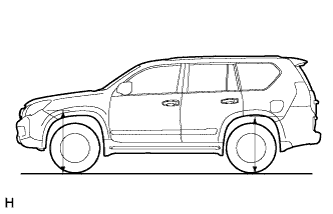

SUSPENSION CONTROL SYSTEM (w/ KDSS) > ON-VEHICLE INSPECTION |
| 1. INSPECT VEHICLE HEIGHT |
Set the tire pressure to the specified value(s) (Click here).
Bounce the vehicle to stabilize the suspension.
|  |
Measure the distance from the ground to the top of the bumper and calculate the difference in the vehicle height between the left and right sides. Perform this procedure for both the front and rear wheels.
| 2. INSPECT FOR SUSPENSION FLUID LEAK |
Perform a driving test.
Check for fluid leakage from the parts and connections shown in the illustration.

| *a | Supplied Tube | - | - |